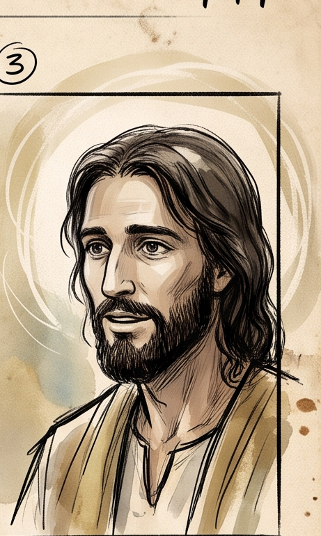
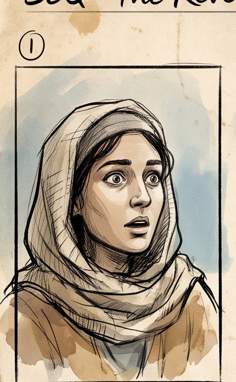
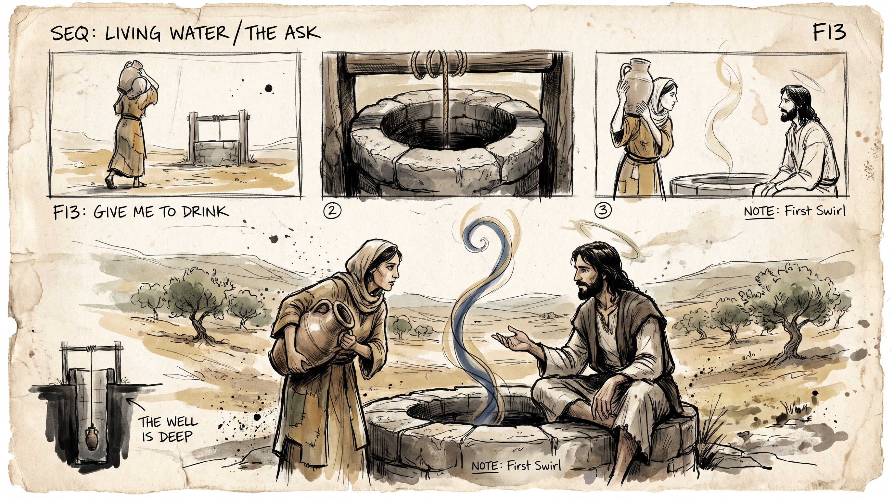
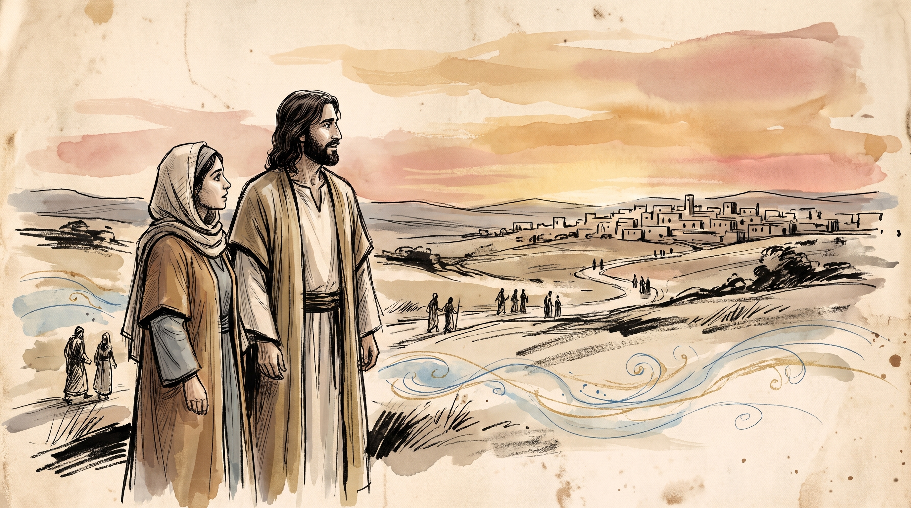

Swirls of Life ✦
Hand-drawn ink-and-watercolor "animation development art" storyboard style — full test log, from first raw prompt to the locked
/swirls-of-life skill.§The skill
One page of hand-drawn ink + watercolor storyboard art per beat: title, frame number, three small labeled sketch panels, one large full-scene illustration, short handwritten notes — baked text on purpose. The blue-and-gold "Swirls of Life" motif is dosed across the episode, tracking how far the story has moved into the gospel truth.
Locked lessons
- Text is baked on purpose — the opposite of
/painted-comic. Title, frame number, panel labels, handwritten notes are the design, not an overlay. Validated:nano_banana_prorenders every baked string legibly as long as it's short — a title phrase, "F04", a 2-4 word note. Never a sentence. - Reference images are mandatory for any multi-shot production. Text description alone drifts — one no-ref test drifted Jesus into a different, older man on one panel. Fix: crop a clean headshot from an approved page and chain it into every later generation via repeated
--imageflags (up to 14, auto-uploaded from local path). - Jesus's reference is series-wide; everything else is per-episode.
references/jesus_ref.pngis established once in this ink style and reused forever after. Never chain the main pipeline's Baroque-oil ref — photoreal fights the ink generation. - The motif carries meaning through dosage, not decoration. Blue ink / watercolor blooms / curls (sometimes muted gold) always behave like literal wet ink on paper — never a magic-particle VFX glow. Withhold it until the story earns it.
- One page per prompt. Multi-page stories are independent calls, one per beat, with refs chained into each.
- Both aspect ratios validated — 9:16 and 16:9 both hold the full page layout.
Steps
- Map the episode's own turning points to the four Swirls stages before writing any prompt (see the stage tags used throughout this report).
- Establish canon refs:
jesus_ref.pngonce, series-wide; a fresh episode-scoped ref for every other recurring character/object/location. - Write the page prompt from the validated template (title / frame number / 3 panels / one big scene / handwritten notes / explicit swirls dosage line).
- Generate with every relevant ref chained in via
--image. - Eyeball at 1:1 — legible text, matching faces, held layout, correct dosage. Regenerate on any fail.
CLI reference
| flag | value | note |
|---|---|---|
| model | nano_banana_pro | ~2 credits/still |
--image (repeat) | jesus_ref.png + episode refs | up to 14, auto-uploaded from local path |
--aspect_ratio | 9:16 or 16:9 | both validated |
--resolution | 2k |
The canon reference images




Guardrails: ~2cr/still, budget for regens · a shot with a recurring subject rendered without its chained ref is a hard stop · eyeball-QC every PNG at 1:1, never trust a thumbnail · occasional transient Higgsfield 503 auto-refunds, just retry · short strings only, never escalate to sentences · before series scale, this needs the same red-team eyeball pass
/painted-comic got — one validated episode is a prototype, not production proof.Round 1Raw prompt exploration no refs · feasibility only
First question: can the model hit this look at all? The user's own master-prompt doc sent verbatim, two ways — straight to Gemini's API, and through the Higgsfield CLI wrapper — at both aspect ratios, no reference chaining yet.

gemini-3-pro-image-preview, no HF wrapper.
nano_banana_pro.

Round 2Swirls dosage progression 5 stills · no refs · standalone prompts
Five self-contained Fable-authored prompts (no continuity between calls, each restates the full character design) spanning the story's blue-ink progression: almost-none → first restrained trace → penetrating density → one delicate swirl → diffused through the whole community. Built by
build_stills.py.
full prompt
A single unified hand-drawn concept-art key-frame, vertical 9:16 portrait, ink-animation development art on aged cream-colored paper... Jacob's well anchors the lower third... the interior almost completely black — at most one nearly invisible trace of deep blue buried inside that blackness, nothing more.


Round 3Full 4-still story arc storyboard-page pattern locked-in
The full page layout (title / frame number / 3 top panels / one big scene / handwritten notes) proven across a complete John 4 arc, rendered at 16:9. This is where the baked-text pattern that became the skill template was nailed down.


Round 4Reference-chain validation the fix for the drift bug
The critical test: crop clean headshots of Jesus and the woman from already-approved pages, then chain both into a brand-new scene — different pose, sunset lighting, standing looking at a distant town instead of seated at the well. If the faces still matched, reference-chaining was proven as the fix for cross-shot drift.

jesus_ref.png.

--image refs. Both faces held close to the source crops — this is the result that unblocked the skill.The bug this fixed: without chained refs, character faces and palette drift between independently-generated shots in the same sequence — first caught outside this style entirely (Peter's-Denial 4-shot test, `_chosen_scene_setup/`) and confirmed again here on an earlier no-ref John 4 pass. Chaining crops as
--image refs is the validated fix, not yet proven at full multi-episode scale.Round 5Skill locked 2026-08-18
With reference-chaining validated,
jesus_ref.png and john4_woman_ref.png were saved as canon, /swirls-of-life was written to .claude/skills/swirls-of-life/SKILL.md, and — a one-off exception to this repo's usual "skills are gitignored local scratch" convention — carved into git tracking specifically so the reference PNGs commit with it.Round 6Image-to-video bake-off 7 models, one finished still
Source still: the Round 1 "F14" page (
raw_prompt_test/user_prompt_16x9_directgemini_newkey.png). Same prompt sent to every model, camera locked, text frozen, subtle localized motion only, 16:9. Total spend ~$5.99 (Seedance 2.5 failed twice, both fully refunded — $0 net on the failures).Held rock-solid — text stayed sharp, hand gesture + swirl motion read as intentional.
7.5cr (~$1.13)
Nearly identical to full Kling 3.0 at the same price — worth a closer look for a cheaper win.
7.5cr (~$1.13)
Stable, text intact, motion very subtle (beard/hand drift). Most expensive of the stable set.
11cr (~$1.65)
Stable and cheap. Matches this project's known pattern: safe, but can read closer to a still than real motion.
4cr (~$0.60)
Held up well, comparable stability to the Kling pair, worth including going forward.
7.5cr (~$1.13)
FAIL — panel 3 (the running woman) changes environment mid-clip, inventing a doorway/interior not in the source. Title underline degrades slightly. Matches this project's prior finding that Seedance invents motion on multi-figure/action content.
2.4cr (~$0.36)
Seedance 2.5 (omni_reference mode) failed server-side on both attempts, credits fully refunded both times — excluded from the comparison above, not a style judgement.
§Where this stands
✓ VALIDATED
- Storyboard-page layout holds at both 9:16 and 16:9
- Baked text renders legibly for short strings (titles, frame numbers, 2-4 word notes)
- Reference-chaining fixes cross-shot character/palette drift — proven with a real held-face test
- The 4-stage Swirls dosage device works as a narrative-turn signal across a full arc
- 5 of 7 i2v models (Kling 3.0, Kling 3.0 Turbo, Veo 3.1, Veo 3.1 Lite, Wan 2.7) hold the page together with no invented content
✗ NOT YET DONE
- Not wired into
cli_visual.py/config.pySTYLE_REGISTRY (unlikepainted_comic/sketchbook) - No red-team eyeball pass at series scale yet — one validated episode (John 4) is a prototype, not production proof
- Whether the per-episode woman-ref pattern generalizes cleanly to a second episode is untested
- User's own words ending the session: "tomorrow let's try and make this into a production worthy skill" — that step hasn't happened yet